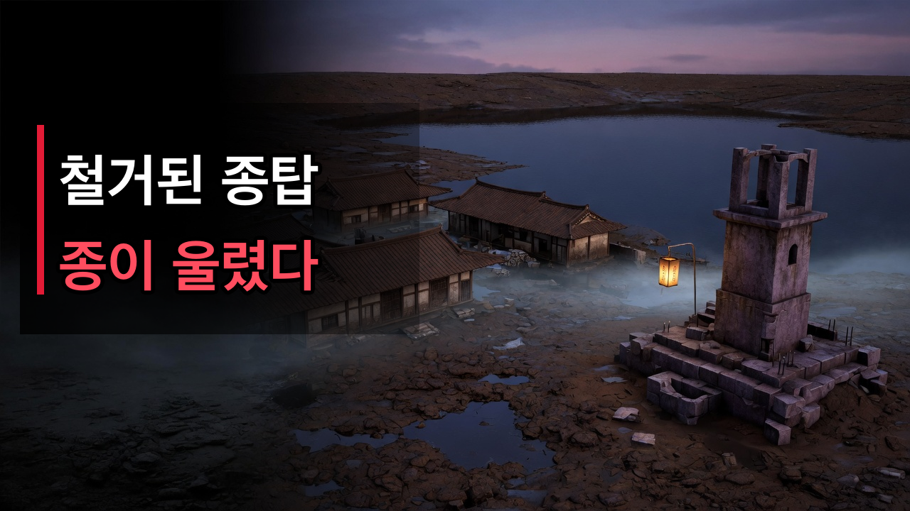
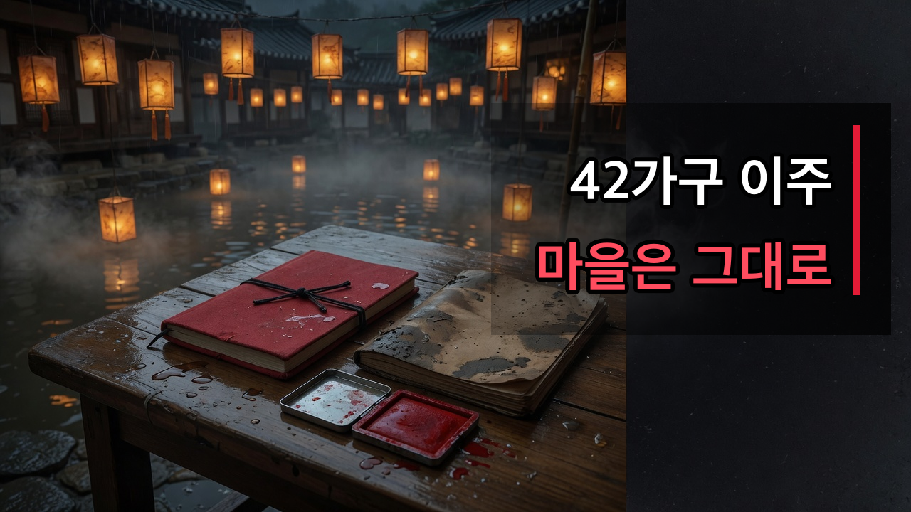

YOUTUBE PUBLISH KIT
소흔리에서 종이 울렸다
제목부터 SNS 홍보문까지 필요한 내용을 한 화면에서 복사할 수 있습니다.
MAIN TITLE
메인 제목
철거된 종탑에서 종이 울렸다 | 30년 만에 드러난 수몰 마을
ALTERNATIVES
추천 제목 5가지
42가구가 이주했다는데, 마을은 그대로였다 | 소흔리 괴담
저수율 9.4%, 물속에서 종이 울렸다
관리소 직원이 말했다. 소리는 신경 쓰지 말라고요
달력은 전부 1996년 8월에 멈춰 있었다
붉은 수첩에는 이름만 마흔두 개 적혀 있었다
DESCRIPTION
설명란 + 타임스탬프
30년 만에 저수지 물이 빠졌습니다. 그리고 물속에서 종이 울렸습니다. 문제는 그 종탑이 30년 전에 철거됐다는 겁니다.
소흔저수지 저수율 9.4퍼센트. 드러난 마을에는 항아리, 이불, 옷이 그대로 남아 있었습니다. 이주 대장에는 42가구가 전부 이주 완료로 찍혀 있었습니다. 그런데 도장 날짜는 하루였습니다. 담수가 시작된 날.
이어폰을 끼고 불을 끈 채 들어 주세요. 17분의 창작 공포 오디오 드라마입니다.
⏱️ 타임스탬프
00:00 철거된 종탑에서 종이 울렸다
00:10 저수율 9.4퍼센트
00:27 물 아래 고향
01:44 붉은 수첩, 이름 마흔두 개
02:25 30년 만에 드러난 마을
02:52 여섯 시 전에 올라오세요
03:53 항아리를 두고 간 집
04:50 8월 14일까지 나온 아이들
06:17 1996년 8월에 멈춰 있는 달력
07:00 존재하지 않는 종이 울렸다
08:37 소흔리 이주 처리 대장
09:57 전부 같은 날 찍힌 도장
11:06 상류에 비가 내리기 시작했다
12:09 물 위의 발자국
12:55 밥그릇 마흔두 개
13:33 수첩의 마지막 장
15:00 유골함과 종소리
16:07 수면 아래 등불
16:37 젖은 글씨, 자리는 비워두마
이 영상은 창작된 공포 이야기입니다. 실존하는 마을·댐·저수지·인물·사건과 관련이 없습니다. 소흔리와 소흔저수지는 가상의 지명입니다.
#공포이야기 #괴담 #수몰마을 #오디오드라마 #무서운이야기
TAGS
태그
PINNED COMMENT
고정 댓글
여러분은 종소리가 처음 들렸을 때부터 이상했다고 느끼셨나요, 아니면 대장의 도장에서였나요? 가장 먼저 소름 돋은 장면의 타임스탬프를 남겨 주세요. 이 이야기는 창작입니다.
THUMBNAILS
썸네일 2종


SOCIAL
SNS 홍보문
PUBLISH TIME
게시 최적화 시간
1순위: 금요일 또는 토요일 오후 9시 (한국 시간)
2순위: 일요일 오후 8시 (한국 시간)
예약 업로드는 공개 1~2시간 전에 처리하고, 공개 직후 30분 동안 댓글에 응답합니다.
FILES
업로드 파일
권장 영상: 2026-011-sunken-village-youtube.mp4
자막 번인본: 2026-011-sunken-village-youtube-captioned.mp4
별도 자막: captions.srt
영상 사양: 1920×1080 · 60fps · 17분 10초
미드롤: 07:33, 12:09 · 카드: 16:50
자막 번인본: 2026-011-sunken-village-youtube-captioned.mp4
별도 자막: captions.srt
영상 사양: 1920×1080 · 60fps · 17분 10초
미드롤: 07:33, 12:09 · 카드: 16:50